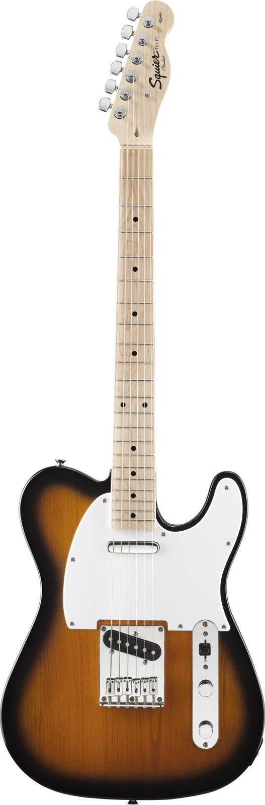

Цвет: 2-х цветный санбёрст
Гриф: клён, С-образный профиль грифа,
Радиус накладки: 9,5`, инкрустация в виде точек
Лады: 21 Medium Jumbo
Мензура: 25,5` (648 мм)
Ширина верхнего порожка: 1,6` (40,6 мм)
Звукосниматели: S/S
регуляторы - 1 громкость, 1 тон, 3-х позиционный Переключатель звукоснимателей
Бридж: 6-Saddle Top-Load Tele®
Колки: Standard Die-Cast
Фурнитура: цвет хром
Позвоните нам: +724444568904
Оставьте заявку: someMail@gmail.com
Приходите: г. Владивосток, улица Некрасовская, д.3